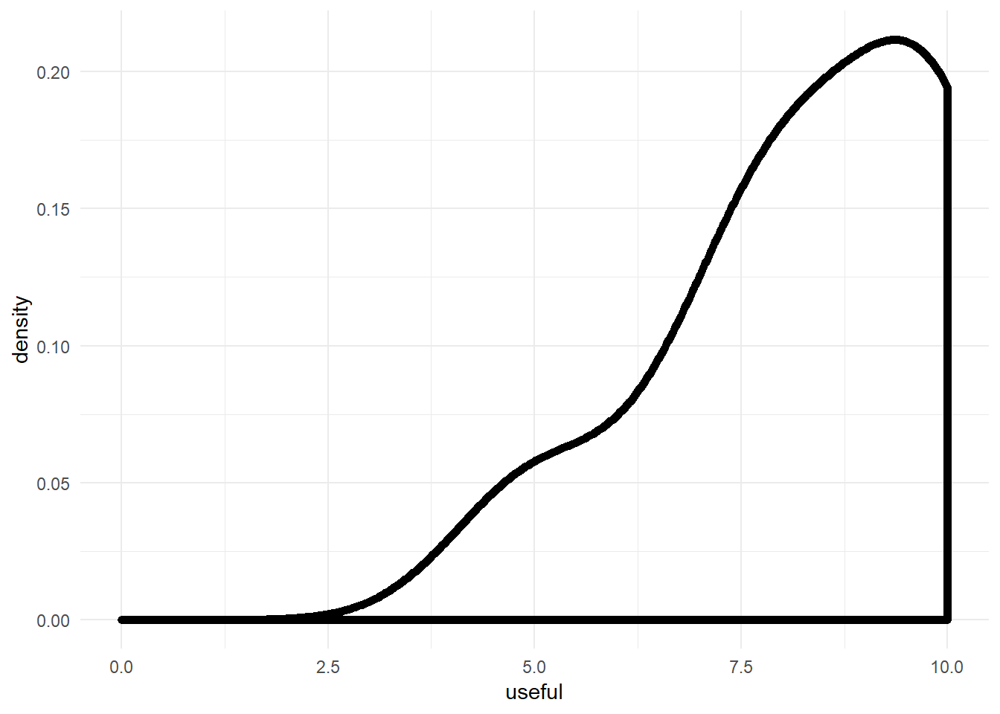
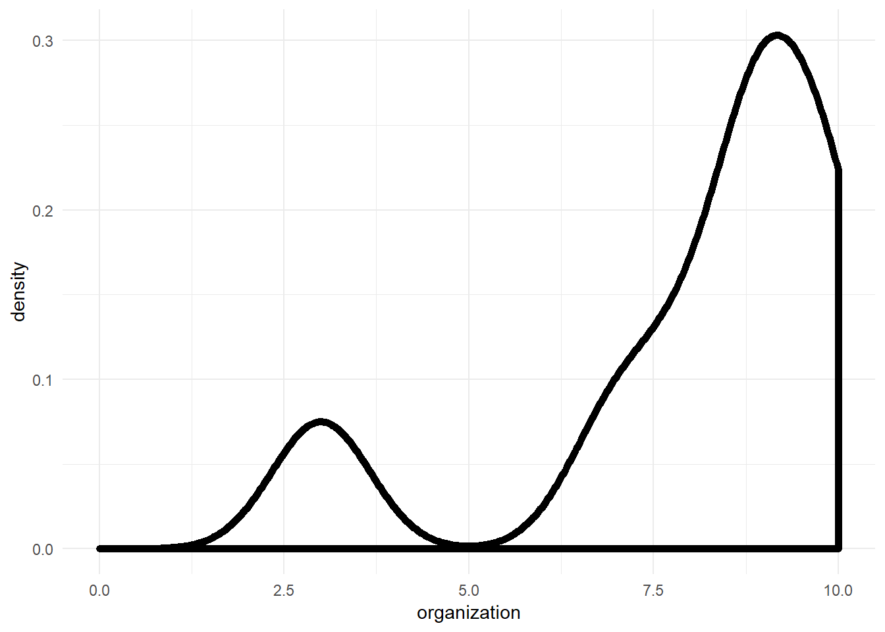
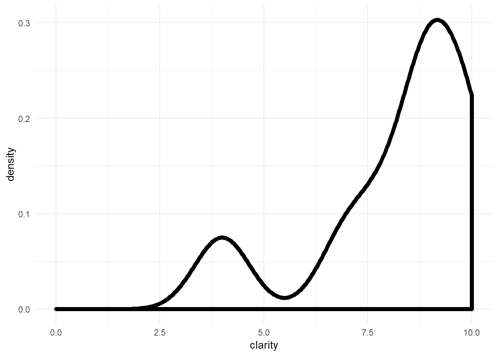
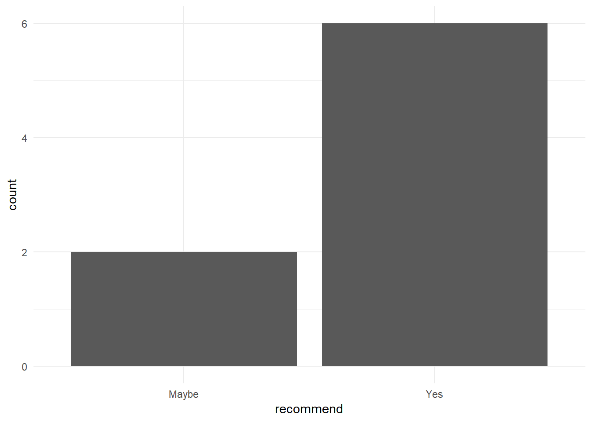

We conducted an online survey after the workshop, we had 8 respondants of ~40 participants (~20% response rate), and we wanted to know
library(tidyverse)## -- Attaching packages -------------------------------------------- tidyverse 1.2.1 --## v ggplot2 3.0.0 v purrr 0.2.5
## v tibble 1.4.2 v dplyr 0.7.6
## v tidyr 0.8.1 v stringr 1.3.1
## v readr 1.1.1 v forcats 0.3.0## -- Conflicts ----------------------------------------------- tidyverse_conflicts() --
## x dplyr::filter() masks stats::filter()
## x dplyr::lag() masks stats::lag()data=read_csv("data/responses.csv") %>%
rename(useful=`Overall, how useful was the information theory workshop?`,
organization=`Please rate the overall organization of the material`,
clarity=`Please rate the overall clarity of the material`,
recommend=`Would you recommend this workshop to others?`,
liked=`What were things that you liked about the workshop?`,
improve=`What are ways that we can improve the workshop?`) %>%
mutate(date=lubridate::mdy_hms(Timestamp)) ## Parsed with column specification:
## cols(
## Timestamp = col_character(),
## `Overall, how useful was the information theory workshop?` = col_integer(),
## `Please rate the overall organization of the material` = col_integer(),
## `Please rate the overall clarity of the material` = col_integer(),
## `Would you recommend this workshop to others?` = col_character(),
## `What were things that you liked about the workshop?` = col_character(),
## `What are ways that we can improve the workshop?` = col_character()
## )Overall, how useful was the information theory workshop? (scale 1-10)
ggplot(data, aes(useful))+
geom_density(size=2)+
theme_minimal() +
xlim(0, 10)
Looks like most people found it somewhat useful.
Please rate the overall organization of the material (scale 1-10)
ggplot(data, aes(organization))+
geom_density(size=2)+
theme_minimal() +
xlim(0, 10)
Some people weren’t fond of the organization, but overall people seemed to like it.
Please rate the overall clarity of the material (scale 1-10)
ggplot(data, aes(clarity))+
geom_density(size=2)+
theme_minimal() +
xlim(0, 10)
Again, some people thought it wasn’t very clear, but others were fairly happy.
Would you recommend this workshop to others? (No/Maybe/Yes)
ggplot(data, aes(recommend)) +
stat_count() +
theme_minimal()
Most people would recommend it to others, but some are hesitant.
What were things that you liked about the workshop? (free response)
print(data$liked)## [1] "Visual interpretation of the graphs, example illustrating how more information could lead to more uncertainty"
## [2] "Presenter in direct contact with audience. Many questions possible. First part (Neil) was well presented. Second part (Robin) seemed very rushed and frantic."
## [3] "Solid theory behind the topic, combined with putting things in practice. really nice!"
## [4] "The speakers were knowledgeable and quite good at explaining the concepts around information theory. The 'hands on' component was good. It was very helpful to have an example to follow through and look back on (i.e. the spinach downy mildew example). There is only so much that can be accomplished in four hours but it certainly got me to start thinking about some applications of Information Theory. Was a bit of a shock stepping out into the middle of the Puerto Rican parade after four hours of statistics:)"
## [5] NA
## [6] NA
## [7] "Using examples to help us understanding"
## [8] "Teaching the idea from the basics to the advanced level."Some people weren’t fond of my section (I tend to be a bit frantic during meetings, blame it on lack of sleep), but overall people seemed to like it.
What are ways that we can improve the workshop?
print(data$improve)## [1] "Pre-meeting access to the files would be nice, but it still worked well as it was"
## [2] "Better structure the order of the material. Not sure if R Markdown is necessary to present the material. If people are not familiar with Rmd it could be very distracting. As it does not add value to the material on InfTheo I would just show/execute the code in R."
## [3] "perhaps by adding extra examples in the R markdown files and walk them through"
## [4] "My only suggestion would be to have the material posted a little earlier, but we're all busy and it all worked out."
## [5] NA
## [6] NA
## [7] "Displaying R programs was too small to see."
## [8] NAWe probably should have made the material available sooner, that was my failing, I was still learning how to do websites with Github.
Overall, it seems like the workshop was well received, and that people found it useful. Now that the materials are prepared, it would be fairly straightforward to do another workshop in a similar vein.
sessionInfo()## R version 3.5.1 (2018-07-02)
## Platform: x86_64-w64-mingw32/x64 (64-bit)
## Running under: Windows 10 x64 (build 16299)
##
## Matrix products: default
##
## locale:
## [1] LC_COLLATE=English_United States.1252
## [2] LC_CTYPE=English_United States.1252
## [3] LC_MONETARY=English_United States.1252
## [4] LC_NUMERIC=C
## [5] LC_TIME=English_United States.1252
##
## attached base packages:
## [1] stats graphics grDevices utils datasets methods base
##
## other attached packages:
## [1] bindrcpp_0.2.2 forcats_0.3.0 stringr_1.3.1 dplyr_0.7.6
## [5] purrr_0.2.5 readr_1.1.1 tidyr_0.8.1 tibble_1.4.2
## [9] ggplot2_3.0.0 tidyverse_1.2.1
##
## loaded via a namespace (and not attached):
## [1] Rcpp_0.12.18 cellranger_1.1.0 pillar_1.3.0 compiler_3.5.1
## [5] plyr_1.8.4 bindr_0.1.1 tools_3.5.1 digest_0.6.15
## [9] lubridate_1.7.4 jsonlite_1.5 evaluate_0.11 nlme_3.1-137
## [13] gtable_0.2.0 lattice_0.20-35 pkgconfig_2.0.2 rlang_0.2.2
## [17] cli_1.0.0 rstudioapi_0.7 yaml_2.2.0 haven_1.1.2
## [21] withr_2.1.2 xml2_1.2.0 httr_1.3.1 knitr_1.20
## [25] hms_0.4.2 rprojroot_1.3-2 grid_3.5.1 tidyselect_0.2.4
## [29] glue_1.3.0 R6_2.2.2 readxl_1.1.0 rmarkdown_1.10
## [33] modelr_0.1.2 magrittr_1.5 backports_1.1.2 scales_1.0.0
## [37] htmltools_0.3.6 rvest_0.3.2 assertthat_0.2.0 colorspace_1.3-2
## [41] labeling_0.3 stringi_1.2.4 lazyeval_0.2.1 munsell_0.5.0
## [45] broom_0.5.0 crayon_1.3.4